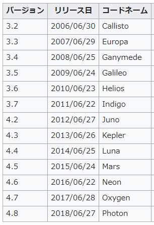
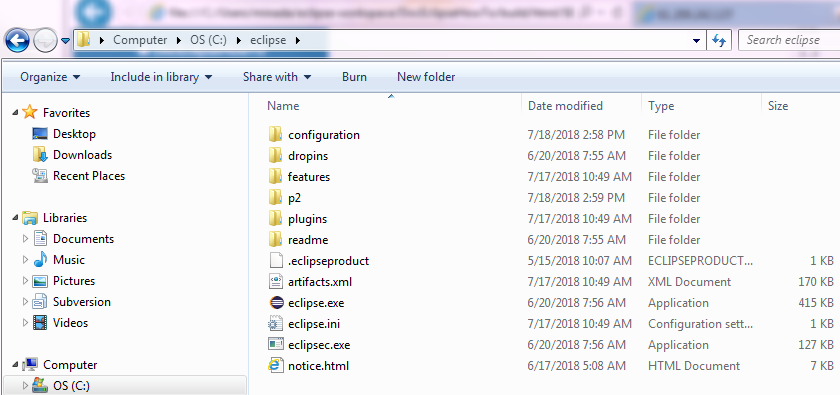
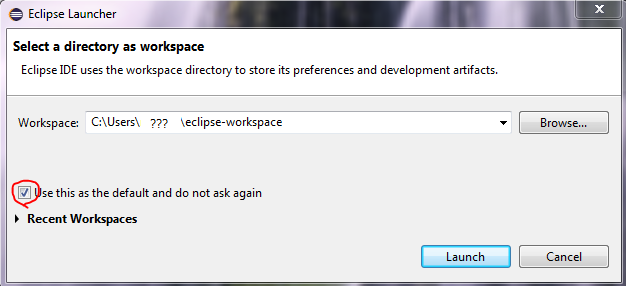
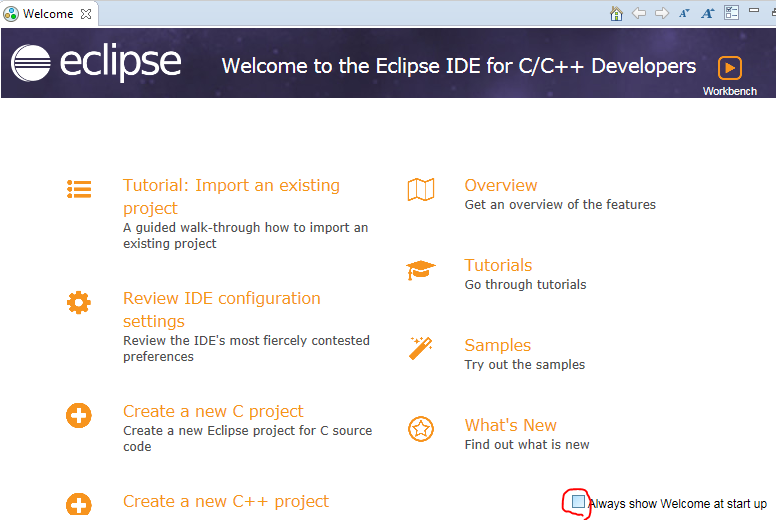
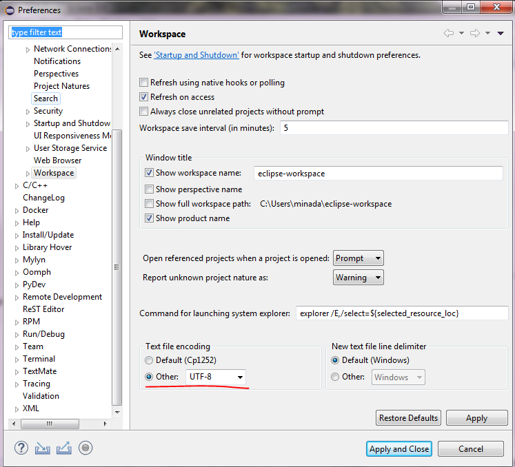
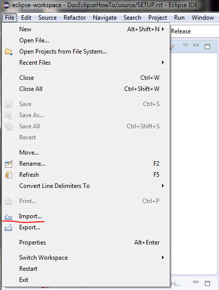
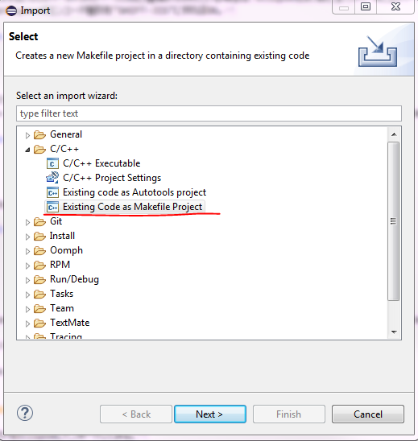
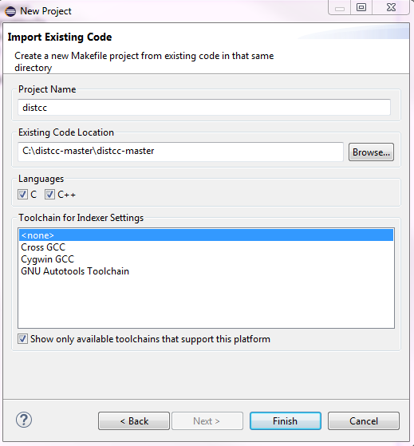
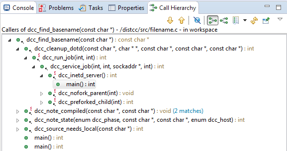

Eclipse環境構築メモ¶
Eclipseで快適なC言語開発環境を実現する。
| 作成日: | 2018/07/17 |
|---|
はじめに¶
Windows 7 64bit環境にて作業を行った。
1. Eclipseのインストール¶
最新のEclipse IDE for C/C++をインストールする。 2018/7/17現在の最新はPhotonなので “Photon Packages” の “Eclipse IDE for C/C++ Developers” をダウンロードする。 https://www.eclipse.org/downloads/packages/
{kind=link}
ダウンロードしたEclipseはCドライブ直下に解凍します。これでEclipseのインストールは終了。 ショートカットをデスクトップやツールバーに追加しておく。
{kind=link}
2. Eclipse起動¶
最初にEclipseを開くとワークスペースのディレクトリ設定画面になります。”この選択をデフォルトとして今後この質問に回答しない”にチェックしてOK。
{kind=link}
次にWelcome画面が表示されますが、右下の”毎回Welcomeを表示する”のチェックを外して、Welcome画面を閉じる。
{kind=link}
これでEclipse起動が完了。上記作業は次回起動時から不要｡
3. 初期設定¶
3-1. テキストエンコードの種類¶
プロジェクトAはSHIFT-JIS, プロジェクトBはUTF-8..というようにEclipseはプロジェクト毎にエンコード設定を変えられない。（自分がやり方を知らないだけかもしれないが。） 従って一括のエンコードの種類を設定する。Window -> Prefarences -> General -> Workspace -> Text file encoding から other をチェックし、 “UTF-8”を手打ちしてApply and Closeする。もしUTF-8やSHIFT-JISなど種類が分かれている場合は、Eclipseを使う前に全てUTF-8にコンバートするのが最も効率が良いと思う。 何かしらの理由によって出来ない場合は、Workspaceのエンコード種別を”SHIFT-JIS”にすればOK。
{kind=link}
{kind=link}
{kind=link}
{kind=link}
4. プロジェクトをインポート¶
SVNやGithubからチェックアウトしたプロジェクトをEclipseにインポートしてみる。 Eclipseプロジェクトではない場合は以下の手順でインポートできる。 Eclipseプロジェクトの場合はImport -> General -> Existing Projects into Workspaceで次へ進み、 プロジェクトを認識すればOK。
  {kind=link}
{kind=link}
{kind=link}
5. コンパイラを設定する¶
各々、使用しているコンパイラ環境を設定する・・・。
6. 機能の紹介¶
6-1. Call Hierarchy¶
関数などの呼び出し元を階層で表示することが可能。 (http://help.eclipse.org/kepler/index.jsp?topic=%2Forg.eclipse.cdt.doc.user%2Freference%2Fcdt_u_call_hierarchy_view.htm)
{kind=link}
6-2. 関数ジャンプ¶
関数上でCtrl+クリックで関数定義までとべる。
{kind=link}
{kind=link}
{kind=link}
{kind=link}
その他・・・・・・。¶
| タブ横の(×)マークを消す: |
|---|
ファイルを沢山開くとタブの(×)クローズボタンで間違ってクローズしてしまうことが多発しストレスになるのでこのボタンは消す。 (https://bugs.eclipse.org/bugs/show_bug.cgi?id=362176) 他にもいろいろカスタマイズ可能。もちろん秀丸やサクラエディタのようにキーのカスタマイズも可能。